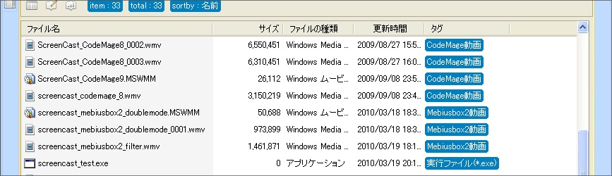

Mebiusbox 2.x ユーザーガイド
スマートタグ
Mebiusbox2 ではアイテムに対してタグをつけることができます。
もし、タグが規則に従って付けられているならば、自動で付けてくれると大変楽です。
新しいアイテムに手動で付けていては面倒ですし、付け忘れもあるでしょう。
スマートタグとは、あらかじめ定められた規則に従って、自動でタグをつける機能です。
フォルダ内のアイテムを検索したときにタグがつけられる
ということです。つまり、そのフォルダを開いたときということです。
なので、スマートタグでつけられたタグを、タグフォルダで指定することが出来ません。
スマートタグは、フォルダを開いたときに、アイテムに対して一時的なタグをつける機能と言えます。
もともと「Everthing検索 › スマートタグでタグ付け › タグでフィルタリング」という構想でした。
が、フィルターだけでいいじゃんと言われればそれまで。まあ、フィルターを補助する目的で作った機能なんで。
Details(詳細)ビューで、タグは目立つので、目印として使うのもいいのでは。

上図では次のようなスマートタグが設定されています。
- "screencast_codemage" という名前が含まれていれば「CodeMage動画」というタグをつける
- "screencast_mebiusbox2" という名前が含まれていれば「Mebiusbox2動画」というタグをつける
- 名前がワイルドカード "*.exe" に一致すれば「実行ファイル(*.exe)」というタグをつける
もちろん、スマートタグで設定したタグは、フィルターの対象となります。